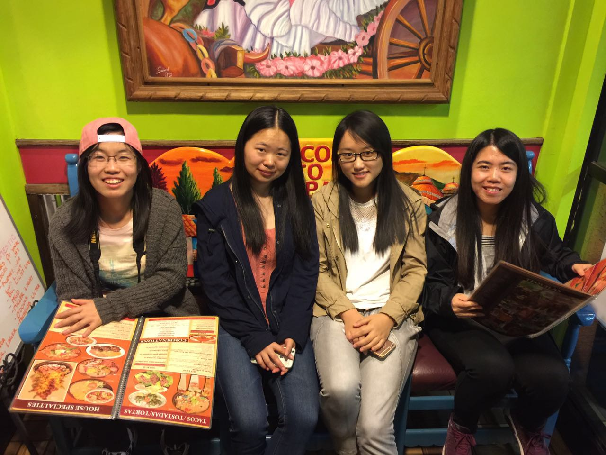
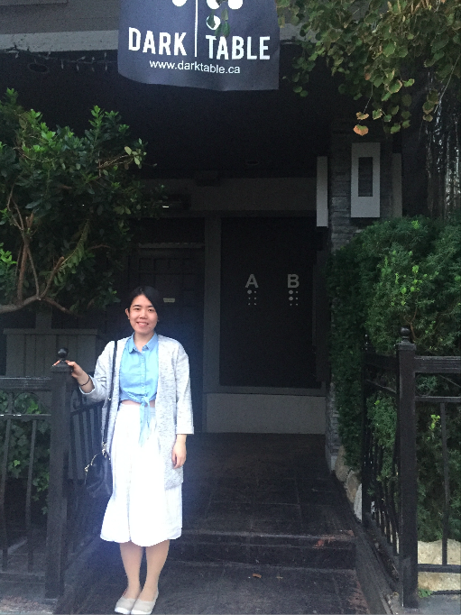
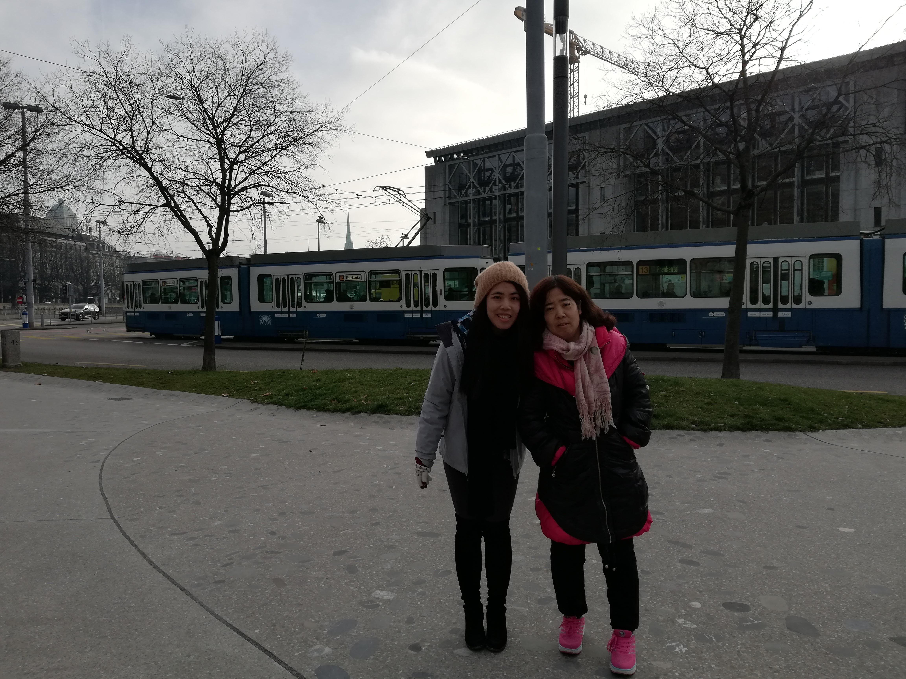
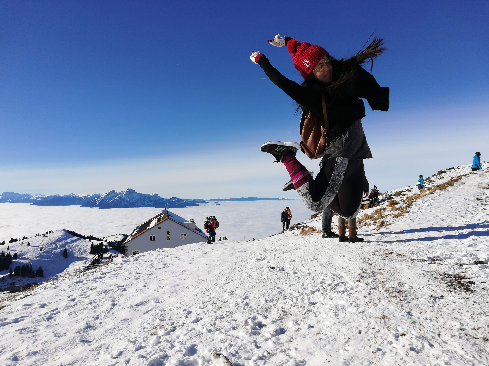
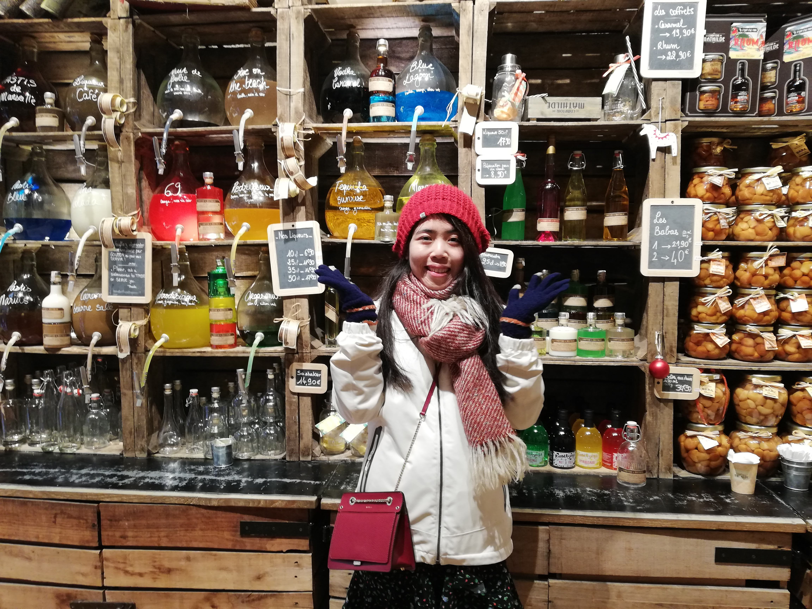
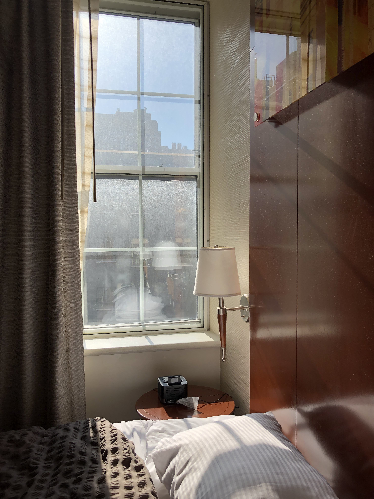
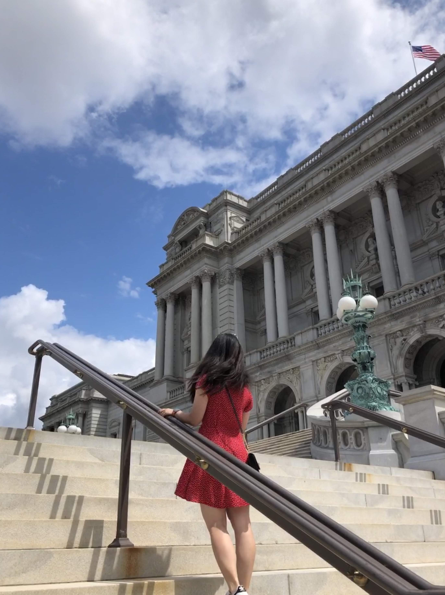
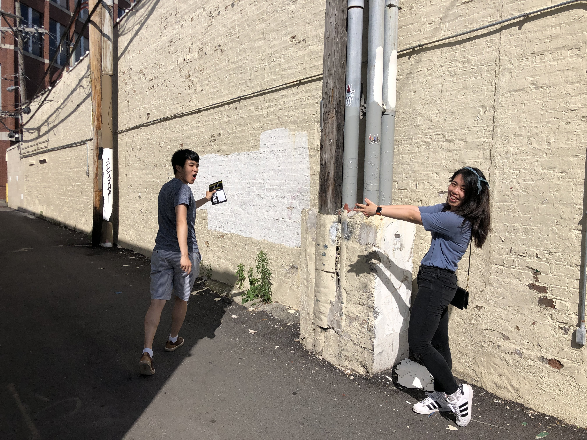
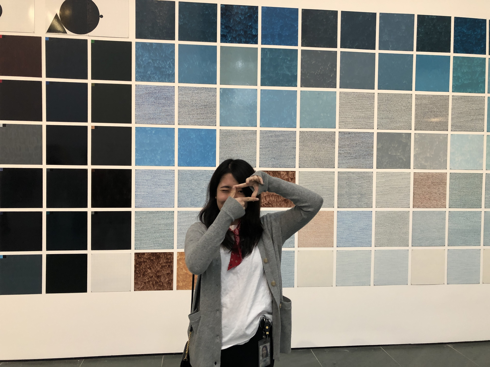

It's my first road trip since I came to the US. Juanli and Ailing flew from Chicago to LA to meet four of us and then we drove from Los Angeles directly to the Vegas.
Day 1: Sitting on the passenger's seat for 6 hours, my face got burnt. But I enjoyed helping the driver look at the GPS.
We had a seafood buffet in the Caesar and settled down at the Hilton Hotel.

Day 2: After visiting the fire state park, we headed to Page.
At page, we caught the splendid sunset.
The dinner at a Mexico restaurant was a solid one. The waiter set the food on fire in front of us.

Day3:Today we are Heading to the antelope valley. The view of the antelope valley is splendid.


Day4:
Today we went to the Grand Canyon and spent almost a day there. Tired and exhausted, we arrived at the airbnb near Scottsdale and were shocked by the great decoaration of the house.

As a mixture of cultural and modern, the downtown Scotsdale is much better than I expected. A lot of fancy souvenir stores and distinctive handicrafts stores are there. The insects that are made of iron, the picture that are drawn on medal, the handcrafts from the ancient Indian people, I was fascinated by all of those things and was even starting to think about living in a town like this when I grow old.


我依然，
失败地没能戒掉你.
如果可以选择失去一项技能，
那么我会选择，
不要对那些失去的美好，
持有那么深刻的记忆。
我怎么就这样，
又一次胆小地错过了你。
Green Lake铺满树叶的小道上，
华大旁人流攒动的brunch店里，
派克市场黄昏的夕阳中，
还有广场上放着电影的帷幕下，
那句没能说出口的话，
最终都变成一句后会有期.
我想，
西雅图需要一场大雨，
来冲刷你存在过的气息。
哦不，
最好是一场大雪，
才能抹去你留下的痕迹。
在时差三小时的多伦多，
是否，
也有人像我一样，
小心翼翼地为你准备惊喜？
在微凉的西雅图的我，
这几天不知道喝醉几次，
醉了又醒。
你放心，
从明天起，
我会像以前那样，
好好对自己。
健身，读书，充实自己。
我只是，
需要一点儿时间，
来对抗我强大的记忆力。
因为毕竟，
你是我的独家记忆。
2017.09.07
Campus: UCLA and USC
Food: Korean Town, Small Japan and China Town
Museum: Getty Museum
City View: The Griffith
Shopping: Third Street and Santa Monica Beach
Sports: The Stample Center
The Wall of Fame
Day1:
做了凌晨的飞机到达台北。checkin之后去民宿旁边的街道上购买公交卡，电话流量卡，换台币。711里面的牛奶都很好喝，在台湾以外的711，我 再也没有喝过这么好喝的牛奶。今天下了一天雨，晚上去101大厦吃了晚饭，参观了诚品书店。
Day2-3:
坐火车到了高雄，租了自行车在国立中山大学骑行。太阳很晒，牛奶冰好好吃。

Day4-5:
垦丁海滩的夕阳很美。

起了个大早骑着摩托车去看日出，一辈子难忘的记忆。

Day6-7:

Day8-9:
在花莲找了个特能说的导游，带着我们玩了一天。去了七星崖，吃了黄鱼面，还要夜市的"棺材板"超好吃。

回到台北，参观了台大，正好赶上当地的毕业典礼，见到了很多毕业生带着家人在校园里合照，超温馨。
// This should be re-implemented some time
胜利之吻，中途岛号航空母舰博物馆：“中途岛”号于1992年4月宣布退役，是美国使用时间最久的航空母舰，这里是航空迷必到之处。胜利之吻(Victory Kiss），是一尊美国海军士兵在二次大战胜利之时与女友相见一吻的雕像，后被视为二战结束的纪念象征之一。该巨大塑像与“中途岛”号航空母舰(Midway Aircraft Carrier)相邻，现已成为圣迭戈的地标，和塑像合照是来圣迭戈必做的事情之一。
巴尔博亚公园： 如果在圣迭戈市内只能选一个地方游览，那么必须是巴尔博亚公园。 该园是加州1915年世界博览会旧址，世博会场馆大部分已拆除，现在有14座顶级博物馆、4个剧院、复合式运动场、玫瑰园及日式庭园等，每一处都值得驻足观赏。园内的建筑一改美式简约风，而是采用了繁复的雕刻将建筑元素完美组合。1977年，巴波亚公园被评定为国家历史地标。
拉霍亚海湾: 拉霍亚的海岸线蜿蜒出自然的峡谷，被誉为加州海岸线上的瑰宝。这里的水质非常清透，奇形怪状的礁石和小岛随处都是，各种鸟类齐聚一堂，是休闲散步看日落的不二之选。很多人都喜欢Children Pool这个区域，它由海堤围住的一个小沙滩，本来的用意是要制造一个游泳区域，不过后来沙子慢慢淤积，就变成了个沙滩。成群的野生海狮会趴在这里的沙滩和礁石上睡觉，鹈鹕(Pelican)和海狮共用礁石的情况很多，但是它们总是能和平共处，不像海狮之间那么爱争抢地盘。喜欢水上运动的你更可以在此浮潜、游泳。
圣迭戈动物园: 圣迭戈动物园坐落在偌大的巴尔博亚公园内，是全球最先进的动物园之一，也是世界上为数不多的拥有大熊猫的动物园之一。在这里栖息着800多种动物：有澳洲的考拉和袋鼠、极地的北极熊、罕见的食蚁兽等等，由于占地太过辽阔，建议你乘坐免费游览车进行参观。
// This should be re-implemented some time
爸爸妈妈在我毕业后来美国找我，于是我有机会和他们一起沿着一号公路开了一遍。一号公路要从北往南开，这样海就在公路的旁边。
SF:
三番对我总是不太友好，每次去都是刮风下雨==但是我还是喜欢它。
金门大桥
九曲花街
pier39
码头周边
Bay Area：
人生目标是，40岁的时候能在Stanford读个书。
San Luis Obispo：
太美的一个小镇，想在这儿生活一辈子。
Santa Barbara:
丹麦村：Solvang是丹麦语，意思是“阳光田园”。它是一个由20世纪初期来自丹麦的移民，通过全盘移植故乡丹麦的建筑风格以及社区规划，而创造出来 的一处在美国境内的丹麦风情小镇。据统计，这里三分之二的常驻人口为丹麦后裔。
Years later, I might still remember the night in Austin.
这次的德州之行，基本是毫无准备的一次旅行。却也意外的有随遇而安的美感。
11.23
赶在上飞机前匆匆忙忙趁着黑五下了几个订单，结果忘带了一堆东西，这也就奠定了之后几天随遇而安一脸懵逼的总基调【微笑脸】。
飞机上，霍老师、岱颖和颖达精力旺盛地一直在玩斗地主，我这对纸牌类游戏只有三秒钟记忆力的人只能默默在过道的另一端，把之前一直落下的《目送》的最后几章读完，读着读着竟然湿了眼眶。闭上眼睛，脑海中反复地浮现着作者父亲喃喃的那几首诗。你说天高地迥，觉宇宙之无穷，你说兴尽悲来，识盈虚之有数，你说白日依山尽，黄河入海流，你说人生不相见，动如参与商。这一条路太漫长，这一条路来回往复，然而，你只能一个人走。
感觉飞机飞了好久，才意识到原来德州离西雅图那么远。想当初之所以选择去德州还是因为觉得德州比纽约近很多呢，果然凡事都得有个比较啊呵呵呵。
飞机落地时天已经黑了，一行人匆匆去租了mini van，赶往之前想去的餐厅，却发现感恩节餐厅不开门。历史总是惊人的相似，想想去年感恩节和组长他们去yosemite的时候也是这种情况。好不容易找到一家开门的日料店，吃完饭匆匆赶往定好的民宿。之前和host已经电话确认过开门流程，没想到到了现场还是一脸懵逼。我说大哥，你这躲在垃圾堆后面的侧门也忒隐蔽了吧。打开侧门抹黑往里走，隐隐听见什么东西低吼的声音，经确认是狗的声音，吓得宝宝腿软==很怂的站在门外等小伙伴们取回了开门的钥匙，终于成功入住。 民宿和想象中差不多，但是男生们的睡觉环境有点儿太差了，觉得特别愧疚特别对不起他们，默默打定主意等到了Austin一定要让大家睡好一点儿。 晚上大家在楼下玩牌，电视里放的恐怖片以及house神秘诡异的氛围把我凝吓到了，所以说嘛少看点儿恐怖片就不会脑洞那么大==晚上睡觉的时候发现不仅没带U型枕，T恤，甚至连睡衣都没带。。。也不知道我满满一个箱子都装了些什么【懵逼脸】
11.24
早上起来和璐岑去附近逛了一下，中途有一辆车在一个stop sign那儿停在我们俩身边，把我们吓个半死。看到了好旧好旧的老爷车。

下午去看了艺术博物馆和莱斯大学。 艺术馆的很多展品还是很有特点的，但是有些真的就看不懂了。一块纸上涂满黑色，题目还叫untitled，这我觉得我好像也会画咧。
莱斯大学蛮大的，有像UCLA一样的小松鼠，图书馆旁边的小树林里还有吊床。
晚上吃了一家巨好吃的墨西哥餐厅，西语翻译过来叫蜗牛餐厅。生牛肉片很好吃！去了一家叫poison girl的bar，居然和我正在用的香水一个名儿，缘分呐哈哈哈。
11.25
早上去了space center。听了退役航天员的presentation，坐tour bus参观了mission control room，看到了真实的火箭。非常鼓舞人心。我总是很好奇，究竟是怎样一种好奇心，可以让一个人冒着生命的危险去探索未知的宇宙。我这种贪生怕死之人，大概一辈子也不会懂了。
下午开车赶往Austin，check in airbnb之后，开车到downtown的一家cafe吃了美式晚餐。味道还不错，就是每一盘都好小！我说大哥你又不是米其林餐厅，干嘛这样嘛，此时突然想念沙县小吃大盘鸡【微笑脸】。
今晚的住宿非常棒，终于弥补了Houston住宿的不足。晚上大家又开始将德扑卖药进行到底。。。
11.26
今天去了state capital，参观了州政府大楼，不过周末很多展厅都没有开门，走马观花地看了一圈。然后参观了UT Austin的museum。下午去古董店之后，把岱颖颖达送到了机场。 没能赶上山顶的日落，不过吃到了超赞的BarBecue。吃到了插着两把刀的巨型牛排，五个人吃两份居然还绰绰有余。
晚上和大家聊了很多，其实自己的所有烦恼都来源于自己的野心配不上自己的努力，以及努力错了方向。很庆幸有这样一次谈话，醍醐灌顶，感激不尽。
晚上小伙伴很照顾我的让我一个人睡了一张床，感动哭==
睡了四个小时，第二天四点赶往了机场。早上八点睡眼惺忪地到了西雅图。精神抖擞出门去，睡眼惺忪回家来。新的一周又开始啦~
Day 1
从西雅图downtown的convention center坐大巴，可以直达温哥华。中途需要越过国境线，出境大概需要排队十分钟。不知道是不是因为阴雨的关系， 九月初的温哥华已经有点儿微凉了。
温哥华的第一站是Granvile Island。大巴停在温哥华的北部，我们乘坐当地的小快艇上到了岛上。这是一个生鲜市场，和派克市场很像， 有卖各种 小吃蔬果纪念品。市场旁边有小码头，停着几艘小快艇。

Day2：
一大早，我们就从民宿坐公交到了Stanley park。
前一天我们找换钱的小店换了一些加元，然后在便利店买了3day bus pass。后来 实践证明其实bus pass并不是那么有用。。租了辆自行车在史丹利公园骑行，看到了很多沿湖锻炼的人们。这不就像green lake嘛！果然 和西雅图人民的生活方式都差不多。不过stanley park要大多了，公园里还可以看见一座形状很像金门大桥的桥，但是是绿色的。
换了自行车，我们去了Gas Town。它位于市中心东北角，是温哥华最古老的一区，作为温哥华的发祥地而文明，如今这是一片在现19世纪街区的区域。 树立在交叉路口的蒸汽钟是这里的标志，他每隔15分钟就会从蒸汽管中发出汽笛一样的声音。 在就是树立在枫树广场上乔治61盖士的铜像，Gastown便是以他的名字命名的。在街道两边经过装修的旧屋，现在已经成为了各种古董店、纪念品店、画廊及餐厅。 但不管店内的东西怎么潮，这里还是飘逸着19世纪旧温哥华气息的旧街。
晚饭时分，我们去了Dark table。这是一家很有特色的餐厅，因为这家餐厅伸手不见五指，它的所有服务员都是盲人。进入餐厅之前，要先点好菜（因为 一进餐厅就什么都看不见了）。餐厅会为每位客人准备一道special course，当然餐厅会问清楚你的禁忌和过敏的食物。之后盲人服务员会搀扶你 就坐，会带着你感受一下桌子在哪，刀叉在哪。能感觉到餐厅的布置十分拥挤，邻桌的人离我们很近。其实这样的餐厅应该蛮盈利的，连电费、装修都省了，还能帮助 盲人找到工作机会，造福社会。菜上上来了，我抹黑找到刀叉，挑起pasta就往嘴里放，吃到最后我都不知道我到底有没有把pasta吃完。。。庆幸还好点的不是米饭， 要不然得更费劲了。

本来打算饭后去UBC看看的，但是吃完饭发现已经太晚了，于是就去餐厅附近的小海滩逛了逛。坐在野海滩的长椅上，能看到对岸灯火通明的维多利亚港。看着水面上开过的游轮， 颇有种老人与海的感觉。从海滩回来，优秀的发现迷路了【微笑脸】。两个人在九点多的温哥华东找西找终于回了家，夜晚在不熟悉的城市行走，还是有点儿吓人的。Day3:
在一家法国餐厅吃了Brunch，就要和温哥华说再见啦。后会有期，我温柔的温哥华。
Day1:
租了一辆zipcar，两个新手司机就这样抖手抖脚地上路了。第一站，Powell's City of Books。这个号称世界最大独立书店的鲍威尔，目前在波特兰市有5家连锁分店，约500名员工， 我们去的总部旗舰店更是占据了整整一个街区。与许多小本经营的独立书店相比，鲍威尔书城几乎可以满足你的一切需求——无论什么书，只要你能想得到，就能在这里找到。 店内还设有咖啡厅。
下午我们开启了老年游模式，去了波特兰森林公园。波特兰森林公园是一个位于美国俄勒冈州波特兰市中心以西、图拉丁山脉上的公共市政公园，在山坡上绵延超过13公里，可以俯瞰威拉米特河，是全美最大的城市森林保护区之一。
从公园出来，我们专门跑去买了有名的Salt & Straw ice cream，并为此付出了90刀停车罚款。
Day2:
第二天一早去了Japanese Garden。波特兰日本花园坐落在华盛顿公园之中，面积5.5英亩，是一座半传统日式花园，1967年对公众开放。花园将西方形式和日本元素结合的异常完美。


最后一站当然是购物啦。奥特莱斯是波特兰的必去之处，因为波特兰是免税州。波特兰有两个outlets，我们去了北边的那个。但是这个奥特莱斯坑爹的一点在于uber可以到达这里，但是不能从这里发车。。。所以如果要去的话还是开车去吧。。。
I made the Hanbok shooting reservation through a traveling website months ago. At the morning of the Hanbok shotting, I realized that the time I scheduled was way too early. Though I woke up very early on that day, I still didn't have the time to finish my breakfast. So my breakfast just ended up staying in the locker of the Hanbok workshop for hours...
I felt that I suddenly got the allodoxaphobia when I entered the hanbok workshop, facing thousands of Hanbok clothes. However, most of the beautiful hanbok were in large size and didn't fit me well, I guess this is the only moment in my life that I hope I could gain some weight... After comparing all those clothes, I finally picked the one with red skirt and golden-black top, which looks like the clothes for a daughter of the rich. The weather outside was minus degrees, but I decided to wear only one thermal underwear with three warmer pads sticking on it. The staff at the workshop tried to remind me that it was very cold outside, I told her it is okay. If I have to choose from being comfortable vs being beautiful at that moment, I'll choose being beautiful. (only at that monent though, and just for a short period of time. )

After the makeup, I had the hairstyling. The hairstyling went pretty smothly and it took less than 10 min. The hair styler bounded my hair low and we chose the red ribbon as the decoration for the hair, which turned out to be a solid choice.


After the photo shotting, I still got 3 more hours for the Hanbok renting. So I wore the hanbok, took my tripod and went to Bukchon. There people were looking at me, couriously, and several foreigners even asked to take a photo with me... There I shotted a lot of photos for myself and I realized that I'm more comfortable in doing selfies rather than having others taking a photo for me. It seems that, in the future, I should take my tripod everywhere when travelling and be the photographer myself haha.


Many people asked me why I chose to travel alone, honestly speaking, I didn't think that much or let's say I didn't consider/forsee all the potential difficulities that I would face during this trip. Fearless enough and naive enough, I dragged two big suitcases and stepped on the land of South Korea. However, it finally turns out that travelling alone is not a bad idea. Just becuase that I was alone during the trip, I would have to force myself to speak their language and behave in the local way rather than regarding myself as a tourist. If I would have the chance to make the decision again, I would still make the same one.
Dec 31st
That day was overwhelming for me. WFH in the morning, pushed the code(which turns out to have a bug => lesson learnt: never push any code before having vacation), took the 10-hour flight to Beijing and then transfered to South Korea. During the 5-hour waiting time in Beijing, I happened to meet two Korean 아저씨 who were in China for business traveling and they introduced the KaKao Map to me, which was then frequently used during my whole trip. The flight arrived at Seoul at 5 am. Standing on the cold wind and being stunned, I totally regreted choosing the overnight flight. After having falled for twice, I managed to get into a Taxi with the help of a kind Korean guy.
Before the trip, my Korean friends all told me that Korean people can speack some English. But I guess they meant mostly for Korean young people....In Korea, most of taxi drivers or buses are the old, because they need at least a couple of years of driving experience before they can take the job. And I feel that old Korean people don't really(or are not that willing) to speak English. Before getting off the taxi, I want to ask the drive how shall I pay him. However, The taxi driver doesn't speak English and I can not exactly express myself through Korean. So we end up looking at each other, silently...haha... Maybe the drive was thinking "Does this poor girl have money? Does she just want to jump away?".... After settling down at the airbnb host's apartment, I went out and was trying to find the bus station. I asked an old lady who seemed to be just out of the showering place for the destination. Being too warm-hearted, she pushed me to the right bus even before I can realize what just happened ... Since it was my first day in Korea and I was still fighting with the jet lag, I just visited the Gwangjang market and Myeongdong, watched the nanta show and went back home. When I was back, the host told me "Oh Jun you look so tired." I didn't feel much at that time, but days after, when I recall that day, I realized I was breathing really hard on the bed and actually even had a liitle bit sign of athema. Until then, I start to realize that I've really had a hard and tiring day!

Jan 1st
Happy New Year!
Today, I finally understand why Korean people like to drink coffee so much -- because it is too cold when walking on the street. A coffee can at least generate some heat for your hand lol. So this morning, I bought the coffee at a lovely coffee shop and took the bus 143 to the painting village with the help of the kind shop owner. Being the only passenger on the bus, I successfully drew the attention of the bus driver. He asked my in which station I will get off. I told hime that I'm going to Tong-Xin-Jiang while he listened it as Song-Xin-Jiang... Then he kept telling me that I took the wrong bus and kindly remindered me to get off in the city hall. I totally understand what he was saying, however, I was not able to exoress myself to him... At that moment, all I thought is "Could you please just leave me alone lol." The problem is finallly solved after I showed him the correct address.
I can not control myself of taking a thousand photos in the painting village. There are all different kinds of paintings on the wall and those paintings are really challanges for my imagination. I struggled to use different postures for those different paintings. It is said that there used to be more paintings, but the residents there were so disturbed by the tourists so that they removed some of the paintings. :( If people can travel with good manners, such things won't happen :( I feel lucky that I'm able to see them before they are all removed.


Jan 2nd
Today is the Hanbok shotting day! Details will be in another blog.
Jan 3rd
Today, I changed to another airbnb host's place as planned, which turned out to be a solid choice. The advantage of staying in one house during the trip can help you save energy since you don't need to move the luaggages around, but changing the places will let you meet more people. My new host was wonderful. She graduated from Iwhua University and started working in Airbnb as a customer support enginner after that. Outgoing and considerate, she is one of the best hosts I've ever met. You work at airbnb while you are also a host there, what an amazing job!
After settling down, I went to the Seoul History Museum and spent most of my day there. The museum is well-equipped. I was impressed by the interpreter machine, with which I can press the number labeled on each of the exhibits and it will broadcast the detailed explanation of them. With the help of that, I was able to know how the Hanyang City(today's Seoul) was chosen as the capital by Sejong, how it became the city of billions of people during the Taejong Period, how Bukchon became famous with the rise of 량반, how Gojong learnt from the foreign countries and created the news office, the Barber's, etc, how the Korean people fighted with the autocracy of Japan while could not resist the temptation of advanced techniques of the Namchon, and how Korea and Seoul developed fast in the recently years. I was shocked by those exbihitions and realized that there are too many things that we could learn from Korean culture and Korean people.

Going back to the airbnb, I met another renter for that house. That Sheldon-alike guy is a german teacher working in Korea, such a cool job!
Jan 4th
Today I went to the Insa Dong and bought some souvenirs for my friends. Also, I was able to buy the stamp at the post office and sent them out successfully by using Korean. So proud of myself!


Jan 5th
Today I went to the Iwhua University. I went to the Iwhua 사랑 recommended by my host. Students there are pretty polite and nice. (Though they were sill suprised by me traveling alone... I though the young generations would not think in that way...)


The small alleys near Namsan were exactly the same as the ones that I saw in a lot of Korean dramas. Two or three floor of houses/apartments on the street with small cvs shops/restaurants near by. I felt afraid the first time I walked on the alley at night, after serval times, I realize that it is so normal for Korean people to walk on those alleys during night. I have to admit that Korea is a pretty safe and ordered country. People are not afraid of walking on those alleys, people dare to put their luggages outside of the restrooms, etc. Today is the last day in Seoul, I will leave for Gangneoung tomorrow morning. I'll definitely miss here. I hope I will come back, and I'm sure I'll come back some day.
I was not planning to visit Gangneung at the very first time when I planned the trip. I was planning to go to the 주문진해변, where the famous scene of the drama 'goblin' was shotted. And when I was collecting the information on the website, I happened to notice that Gangneung is such a beautiful and meaningful place so I just changed my mind.
All my worry disappears at the time when I was on the taxi to the Seoul Express Bus Terminal. I used the KakaoTaxi to order the taxi and my conversation with the taxi driver was pretty fluent. Though he doesn't know English, we were able to communicate using my poor Korean and our imagination :) He complains that the black taxi in Korea is pretty expensive and said a thousand good words for the KapkaoT. When we arrived, he also got off the taxi and talked to the parking-lot attendant to make sure which side of the building I shall go to. (The Southern Seoul Express Bus Terminal has two adjacent buildings, each of which had different destinations. ) I went in and bought the ticket, found the correct boarding gate and the driver helped to put my luggage below the bus. The whole process took less than 8 minutes. I was so surprised by the efficiency and convenience of the express bus. (which is also kind of misleading though. I later realized that I was just lucky to get in at the right time. The bus is not scheduled that as frequently as I thought... I almost made a mistake when I went back to Incheon from Gangneung later.)
The bus seat was pretty spacious and the bus was full of university students. A student-look, handsome guy was sitting besides me and he looks so cold and elegant. However, I later realize that Korean people are just cold on the appearance lol. When I asked him if he could speak English, he gave me a shy smile and said "a little" with his fingers holding together(showing the gesture of "little" lol). And during the middle breakup at the gas station, he also kindly reminded me that the bus would leave in 5min. So cute.
After arriving at Gangneung, I immediately took the taxi to the airbnb and met my host, a Korean gentleman who can not speak English. Having settled down, I took the bus to the Ojukheon. Gangneung is a small city, I say it because the waiting time for the bus in Gangneung is much longer than Seoul. At the moment when I entered the Ojukheon, my tripod just broke -- broke after having been working hard and haveng been treated badly for the previous 6 days in Seoul. Actually it is just the right time for it to break -- I was so tired after 6 days of long walk and didn't have any spare energy for taking a lot of photos. Ojukheon House was where Shin Saimdang (1504-1551) lived and where her son Yi I (penname Yulgok; scholar and politician of the Joseon Period) was born. It was built during the early Joseon Dynasty and remains one of the oldest wooden residential buildings in Korea. It was designated as Treasure No. 165 in 1963 and has been maintained by the descendants throughout the generations.


Though I am a morning person, getting up at 4am was still hard. I gave up brushing my teeth and washing my face. I put a down jacket and went out. I arrived just at the right time -- 30min before the sunrise. I was able to catch the whole process of the sunrise using my camera. It was splendid when the sun jumped out of the sea. The whole sea level became golden and gorgeous. Standing on the sea and watching the sun, I feel I'm pretty small in the world. You see the sun, the sea, and the beach, they are there for billions of years. They've witnessed all the dynastys, all the sorrows and happiness of its people. And they are just there, doing nothing and saying nothing. As the saying says, 'Great music has the faintest notes, the Great Form is without shape'. Comparing my life with the eternal natural world, I'm just so ephemeral. What shall I do with my short life?

In Jeongdongjin, I saw the station that is nearest to the sea, the sand clock park and the time museum. Seeing all of those reminds me to cherish the time. I remember the words at the end of the time museum, 'one minute, you can not finish reading a page of book, you can not watch an episode of tv series, but you can hug the one sitting besides you, seriously and tightly'. Life is short, let's just do what we want.


Sitting on the bus and watching the outside scenes passing by, I realize that I have to say goodbye to Korea. I'm grateful for the great 8-day trip here and it makes me more broadminded. Ephermal I am, I can still live the life to the fullest. The biggest happiness of life is to spend the life in your own way. The books you've read, the roads you've passed and the people you've loved, those are the things that make you become the vivid person, the things that make you yourself.
Yuan and I were friends when we were interns and it has been two years since the last time we met. Time doesn't change a lot. The times when we were interns seems to come back when I see her again, except that her long hair now becomes short hair.
5.25
We started heading to Oregon from Seattle after work. We have four people going together, 2 girls and 2 boys. Though I didn't know the two boys beforehand, we became friends as soon as we met.
It took us three hours to drive from Seattle to the place where we booked. It is a small town near the dog mountain, where we will be hiking the next day. It was almost 10 pm when we arrived. The airing we booked was in the basement of a house. Though the air was a little bit not that fresh, we still had a good sleep. We decided to head to the mountain at 8am tomorrow.
5.26
I woke up at 7:20am today and was surprised to see that everyone was ready to go at 7:50am. This has never happened during my previous travel experience. Usually when people decide to go at 8am, in the best case, they'll be able to go out at 8:40am. During that next 3 days, I realized that this is not by accident, I really have found some really nice and punctual friends.
After going to a biscuit restaurant which ranks No1 in that area, we took the shuttle to the foot of the mountain. The ticket was $2 but we didn't have loose cash, so we ended up giving the driver $20...
In the first 20min of the hiking, I was surprised by the difficulty of the mountain. It was steep and Yuan was climbing so fast. It is the first time that I felt that I need to exercise more. Maybe the previous hiking’s that I've had was too easy and too mild... After half an hour, the road became flat and easier to climb. After having been hiking for about 2 hours, we finally saw the yellow followers. What was funny was that we thought those follower were the sun followers when we saw other people's Instagram photos, but it turned out to be just normal small yellow followers. Photos can sometimes be misleading... Many people took their dogs to hike there, I guess that is the reason why it is called the dog mountain. A dog owner even kindly let his dog to take a photo with me (though his dog doesn't seems to be interested in taking the photo with me lol )
Keeping hiking, when we reach the place that is 15min far from the top, we can see that the mountain was surrounded by cloud. The wind was heavy which almost blew me away from the ground. After going through the strong wind and cloud, we finally got to the top of the mountain. When sitting on the peak of the mountain, I can finally hold all the mountains in a glance, such a sense of fulfillment. This is the feeling after paying efforts and getting the result.
The road back to the mountain foot was easy for me since I took the right hiking shoes. The boys who didn't take the right hiking shoes ended up falling down for several times.
After the long walk, we were exhausted and ate at a Ramen place. The boys then drove us to the airing near the crater lake. The place was hard to find since there was no signal. We finally find it -- a place where we thought was an abandoned factory... The airbnb doesn't have hair dryer, which sucks.
5.27
Today we headed to the Crater lake. The lake was beautiful but it just has a lake, nothing else. Not worth the 6 hour's drive.

After checking in at airbnb, we went to the water front of Portland and got to see the night scenes of Portland. In the square, we saw a fountain and I suggested to Yuan to run into the fountain, which turns out to be a stupid suggestion. I thought the water will be mild and we could play in the water just like kids do. However, when I step into it I realize that the water was really rapid. I and Yuan got all wet and the boys quickly drove us back the airbnb to get changed. It was so stupid, but fun ...
5.28
Today we went back directly to Seattle and went to DongtingChun as the end of the trip.
This trip makes me realize that I'm still young, and there is still thousands of things waiting for me to experience. O'ever young, o'ever weeping.
Unlike all the other trips I've had, we didn't spend much time planning this trip. Heading out in a hurry, both of us forgot to bring our I-797....
6.2
There is nearly no direct flights from Seattle to Quebec city, so I ended up having to transfer for twice. The first stop was in Calgary, a city that I didn't even hear of before this trip. On the airplane to Calgary, there was a Shelden-alike man, Fred, sitting besides me. He was from Calgary and he introduced Calgary to me in details. From him I came to know that Calgary is one of the cleanest city in the world with both skyscrapers as well as beautiful natural scenes. Though having developed fast due to its oil industry, it still maintains its wild western culture. ( By the way, I call him Shelden-alike man because he was so picky when I met him. When I saw him, he was reminding the other passenger not to tough his bags and he even had a quarrel with a guy who pushed him unintentionally. However, my impression for him changed a lot after we sat down and talked for a while. Talktive enough, he told me that he was working for Cisco in Europe and then changed his job to several different places. Having lived in so many cities, he is able to master English, German, French and Spain. This is actually one of the reasons why I like talking to people during travelling -- You will gradually find out that every soul is so interesting and unique.)
From Calgary, I entered Canadian territory. The boarder check went pretty smoothly, unlike in Seattle, where you need to wait for half an hour to be able to just reach the officer. Stepping out of the exit, I went to the counter of Westjet with the help of a very kind airport volunteer. I was impressed by that volunteer. She was so warm-hearted that I was just planning to ask her the direction, but she ended up leading me to the place, which takes 5-10min walk. At one moment, I even suspected if I'll be charged for the service since in China, most people will be nice to you only when you will pay for the money. However, after talking to her along the way, I felt shameful about my previous thought. She is an elegant lady in her 70s and she volunteers there every Saturday. The smiling face and cheerful mood makes her look like a girl in her 20s.
From Calgary airport, I took another flight to Toronto, where I'll met my college roommate Juanli and then we flew to Quebec city together. We didn't notice that that we would both be landed in Toronto and take the same flight. We found it out when we landed in Toronto, such a coincidence.
A lady with Tobacco-smell sat around me. For the first 1 hour of the trip, we kept silent and said nothing. In the last 20min of the flight, I stood up to go to the restroom and was stopped by the air crew since the flight is going to land. That lady looked at me and said "now you can not go to restroom" in a sorry tone. Then we started talking. After 1min, we realize that we have exactly the same trip plan -- go to Quebec, then rent a car, then go to Montreal, Ottawa, Toronto and the Niagara Fall! She was traveling alone for the first time since she daughter had a job and can not accompany her anymore. I wished her good luck and we said goodbye, hoping that we will meet again later in the trip.
Arriving at the hotel, it was already 1am. The streets were quite. The hotel was great. It seems to be re-built from an old building and all the doors are pretty low, which looks like the scene in European films in 1950s. One funny thing was, when getting off the uber, we checked the uber app and it shows that we were one block away from the destination. So we held the phone and showed it to the driver. However, when we were passing the phone to the driver, the position point slowly moved to the right place ... So when the phone was handed over to the drive, we were at the exactly correct place and the driver looked at us as if he was looking at two fools ... Now I understand why people hate the latency of the service!!!
6.3
We got up at 8am and had the breakfast buffet in the hotel.
Then we started to hang out around the old Quebec city. I'm a little regretful that we didn't sign up for a guided tour. All the signs / infos were in French and we didn't really understand any single word. We went to the Rue Du Petit Champlain, the most famous street for visitors, where you can see the small shops which sells clothes and handcrafts, as well as the french restaurant. Then we saw the Quebec Fairmont Chateau Frontenac Hotel and the fountain, where the most famous scenes in "Goblin" were shot.
We also went to the Le Marché du Vieux-Port and then Juanli found that her feet hurt and wanted to go to the emergency room. So we ended up spending the other half of the day in the urgent care.

6.4
Quebec looks totally different when rainy. In the morning, when JuanLi was still sleeping, I went to the hill that we went to yesterday. I was just planning to take a walk there but happen to notice that it was actually a military base there and they have a military museum down the hill.
After Juanli woke up, we went to a restaurant called Aux Anciens. Their meat pie was very famous but the taste was just normal. I like their soup though.
After lunch, we went to the battle-field museum and learnt about the history of Quebec. Quebec was previously governed by French people until 1759 when it was beaten by English people. Though being concurred by the English people, people there were still able to retain their old culture. I now understand why Quebec people are so proud of speaking French.
The rain was so heavy and we had to go back to hotel the rest of the day.

6.5
Today we headed to Montreal, the second largest city in Canada and the biggest city in Quebec province. It can finally be called as "city" (when comparing to Quebec city....), at least they have big supermarket...
In the noon, we went the botanical garden, where we saw a large collection of plants, which includes fruit, flowers, grass, vegetables, etc. After that, we went the cathedral and that building was really fancy. When you are in the church, you will be influenced by the atmosphere there and automatically become quite.


6.6
This morning, I went to take a walk in downtown Montreal. I asked an old gentleman for the direction of the underground city. He was so kind that he directly took me to the main entrance of the underground city, which is 15min of walk from where we were! He used to be a guide for this city so he knows this city very well. He showed me where the old Montreal, modern Montreal and downtown Montreal are. And he showed me the building of Bell, the latest mobile carrier in Canada, the building of a media company, the oldest building in downtown, etc. When reaching a building with kinda pink mirror, the entrance of the underground city is there. The cities was built more than 50 years ago. It was amazing how people digged a big hole and built a city there.
After having the noodle at Chinatown, we went to the royal mountain. Many local people there for hiking. It was a little bit tiring to get to the top. Standing on the top of the mountain, you'll be able to see the view of the whole city. It was said that the buildings was not allowed to be higher than that mountain, not sure if it is still true ... We walked to the place what sells the smoked meat sandwiches, and bought two huge sandwiches, which tastes great. Too much meat though.
To be continued in the next blog.
As having been said above, I and Juanli drove from Montreal to Ottawa after having the huge smoked meat sandwiches. Ottawa is the capital of Canada. It is very clean. We arrived at the Parliament Hill in the evening. The Parliament Hill is made up of three main buildings. It is said that all the main buildings went through a fire and only a library remained untouched in that fire.

6.7
This morning, I took a long walk along the river in Ottawa and saw a bunch of beautiful houses. In the noon, we started heading to Kingston and arrived there in early afternoon. We took the cruise to the center of the thousands lakes and saw a lot of islands. There are even a lot of high buildings on the islands, which is impressive.

After settling down in the hotel, Juanli stayed at hotel, trying to finish her work. I, with no remaining work to do, walked to Queue's university. The university was large, clean and quite, with a great lake view. It is also one of the most beautiful universities in Canada. 6.8
Today we drove from Kingston to Toronto. Finally, I feel that I'm living in a real "CITY". The tall buildings and malls reminds me of how the city life looks like... I have almost forgot how big cities look like after 5 days of traveling in east Canada....


After checking out the harbour area, we went to fetch the car and checked in the hotel.
6.9
Today we drove from Toronto to Niagara.
Coming to Toronto, I finally feel that I'm in my battlefield. Every morning, my friend Juan Li woke up at around 10am, and I usually had nothing to do during 7am-10am and I could only go out and took a walk. However, in Toronto, I could easily find a thousand things to do in the morning. This morning, when JuanLi was sleeping, I went to the shopping mall and went shopping until 10:30, when I felt that I had to leave. On the way back to the hotel, I came across a group of people who were parading for eclipsy.
Juanli drove the car for 1.5 hours and we arrived at the Skylon tower, on top of which we had the clear view of the Niagara fall. There are two lunch options on the Skylon tower -- the revolving dinning room and the buffet. We chose the revolving restaurant and the food was so-so. But the good thing is that with the revolving feature of the restaurant, we were able to have a 360 degree view of the Niagara fall. Such a special experience.
After lunch, we took the cruise to have a closer look at the fall. The cruise went really close to the fall and we can feel the rain beyond our head. Then we took the "journey behind the fall", which allows us to go even closer to the side of the fall. Even though I was wearing a raincoat, I got all wet.
6.10
Today is the last day in Canada. Juanli's flight was in the morning, so I had to be in Toronto alone for this day.
In the morning, I had brunch at a restaurant called Aunties & Uncles, which is recommended by many public media. I ordered the breakfast pocket and it was great, probably the best brunch that I had recently. The bread was not like ordinary bread, it seems to be made of puff, tastes kinda like the croissants. The meat was a little bit salty but the egg kind of reduces that feeling. I was lucky that there were not a lot of people when I arrived there, half an hour later, the queue became very long.

After having the brunch, I went to the Royal Ontario Museum. I was not having a high expectation on it but is turned out totally beyond my expectation. Before going, I checked the time for three guided tours so that I was able to catch all three tours. In the first tour, the lady showed us around the highlighted exhibitions in the museum. I saw the cast and original bone of one kind of dinosaurs that lived on a society (like more than 1000 of them are in a group...such a huge group...). What surprised me most was a mummy for a young lady. It is said that the mummy has not been opened yet. In 1970 and 1990, the scientists took that mummy to a hospital and did x-ray of it, which shows that the lady inside was in very good condition and they concluded that the lady was dead because of a lot of tooth in her 25 - 40s, and she never had a kid, which is kind of a mystery since in ancient Egypt a lady in that age should normally have some kids. The second guided tour was for Egypt, I came to know that in Egyptian paintings, the important figure should be significantly larger, despite of the scaling. The third tour was for Chinese history. The Chinese lady introduced Buddhism, Qin , Han and Tang dynasty. At the very last, she introduced the tomb of a general called Dashou Zu in Ming Dynasty. She told us that the Zu's tomb can not have a camel status in front of it since camel means loyalty and he was not considered to be loyal. I debated with her for that for a little bit. General Zu was not considered as loyal because he surrendered to Qing Dynasty. But I remember that he surrendered just to protect his citizens, I remember that he was not willing to surrender, but the city was running out of food and people started to eat tree roots, even people, that why he surrender. He also said to the master of Qing Dynasty that "You guys please kill me, but let my citizens be alive." He is definitely a nice guy that there has to be a person who should take responsibility of the failure of the battle. Sometimes history is so ruthless. Such a tragical hero....
Then I went to the University of Toronto. Thanks to my friend Jung, who drew a map of the university, I was able to catch the main places for the university. Their library was huge and spacious, Maybe because it is now the summer vacation, the library/study rooms are not crowded. And in the Hart House, there are a bunch of famous saying on the wall. One of them says "We don't stop playing when we grow old. We grow old because we stop playing", which is so true. Finally to find an excuse for me to keep playing haha.
After fetching my deposited bag, I used the Wifi in the hotel to book a Uber. It is really hard to imagine that I was able to survive here in Canada for a week without having cable internet access. The Uber driver is a Turkish man who has moved to Toronto for a year. He can only speak little English and he told me that he knew 0 English when he came to Canada, which reminds me of the time when I first came to the US. Different from him, I was learning English even when I was in China for at least 10 years. He, in his 30s, knowing nothing of English, having two kids and one wife to raise, can start from scratch, which was really inspiring. I really wish that his life will get better and better.
The return flight was so unstable. The flight dropped for 1 second, for twice. The caption even broadcasted the emergency exit, for twice. I remember that the first time when the flight started to drop, I and the lady sitting besides me, looked at each other and held each other's hand tightly immediately, though we didn't even speak to each other before.
Four years ago, when I was applying for my graduate school, I almost decided to go to ETHZ (if UCLA didn’t give me the offer). After deciding to go to the US for my graduate school, I always feel regretted about my decision every now and then and always wanted to visit Switzerland and see how it looks like. That day I was looking at Google’s holiday policy and realized that we’ll have two days off for both Christmas and New year. Taking 6 days off and I’ll get a 16-day vacation. Okay, Europe, here we go! Applying for schengen visa is not that hard. I applied for that in the France embassy in San Francisco and it took me less than a week to get my passport back.
2018.12.22
There aren’t many direct flights from SEA to Paris. So I ended up buying a flight which has one stop in FRA. The Concur flight to FRA departures at 5pm Seattle time. It was the first time I tried that flight company and the flight was really narrow. The guy who sits besides me is a tall, strong American guy -- he was wearing And he keep complaining to me that the seat are too narrow for him to relax his legs. Well, it is the first time that I feel good about being short. I slept for the first 6 hours of the flight. When I woke up, the guy sitting next to me was also awake, so we started to talk to each other. He told me that he was there to see his wife, who recently moved to Germany for work. He told me that he will be in Germany for 1 month with his wife and then move to Germany forever early next year. I asked him if he is American or European and he asked me back “can’t you tell my heavy American acceant”? Well, I don’t even know how to speak English without accacent, how can you expect me to be able to distingulish between different accent…. The transfer time in FRA was short and soon after I arrived at GCD. Walking outside of the airport, I saw my parents. They’ve been waiting there for me for 10 hours, I feel reallt sorry for them. I should have let they go to the hotel first. I was hesitated to do so because I was afraid that their english was not good enough. But I realize that I was wrong in the following days. My father’s english has improved a lot since last time they came to the U.S, which was 2 years ago. After gathering with my parents, we met the shuttle driver (which I booked before the trip). The driver is an Indian guy who has been living in Paris for 20 years. He speaks some English, so on our way to the hotel, he introduced some tourists places in Paris. He also showed us the night view of Effel tower and Champs Elysee. What is interesting is that the light of Effel tower blinks every hour. And at the time when we were passing the Effel tower, it was right at the time when the light starts blinking. So we got to see the gougrous view and my parents were totally fancinated by that. We arrived at the hotel at around 8pm. The hotel was located at the 8th arr, pretty close to the Eiffel tower and is pretty safe. The elevator was pretty narrow, which can barely fit in 3 suitcases. In later days, I realize that is the normal size for European elevators. After putting all the luggages at the hotel, we went to a nearby French restaurant for dinner. The food was a little bit over-priced but the lamb was pretty good. As the side dishes, the restuarant gave us some cold susuage, which was pretty hard to chew. I’m wondering how would people like eating that… Back to the hotel. My mom insisted that we need one more quilt but I was too lazy to talk to go downstairs and talk to the reception. So my mom searched the words online and managed to talk to the reception lol.
2018.12.23
Today we got out at around 8am and it was still a little bit dark. There were almost nobody on the street. Seems paris people don’t like getting up early. It was a little bit rainy in Paris. We went to the metro station (France people call it Metro instead of Subway) and bought the day pass for the transportation, with which we could hop on all the bus/metros around paris. The lady at the ticket office didn’t speak english, so it took us some time to finally get the two day-passes and one youth-daypass. There are a log of stairs in the metro stations and there weren’t a lot of escalators (or maybe it’s just I didn’t find it). It’s the first time that I see metro with two floors! We took the metro to an Australian brunch place called Le LouLou. The decoration was cute. We chose to sit on seats ourside because it looks so cute with all the pink stripes. (They have the heater and plastic shelter outside, so we didn’t feel cold at all.) My parents don’t quite understand the menu, so I ordered all the dishes (It kept happening for the rest of the trip lol). I ordered the avocado toast for myself, which turn to be a little bit sour. And ordered the french toast for my mom and the egg benedict for my dad. I ordered a drink called “golden milk” for my mom, which looks like steamed egg custard.
After brunch, we went to the Musee d’Orsay. I really didn’t have the talent for arts, so all I did is just to find the self-portrait for Vangut and took a picture… Going outside of Orday, we went to the seine river.
Across the river, it is the Louvre Museum. One funny thing is that when w were in the line for buying the tickets, a guy in front of us gave us two tickets for free. He said that he bought the tickets but had to leave right now. What a lucky day! In Louvre, I only see people, people and people. (Oh yeah, of course, we took the picture of Mona Lisa’s smile and Venas). From Louvre Museum, we went to the Notre Dame de Paris.
After that, we went to Le Bouillon Chartier. This restaurant is said to be a old french restuarant. In old France, mainly blue-and-white collar workers went there, so the price was kept low but the food was good. We ordered the snail and foie gras. The plates were not well-decorated, but the taste was good.
2018.12.24
After having brunch at a nearby restaurant, we wen to Effel tower and took a thousand pictures there. There were a lot of Aferican people there, selling small handcrafts. I was surprised by their talent in language. They can all speak several different languages. One guy tried to talk to us in Chinese and actually his chinese was not bad!

We walked to triumphal arch from Eiffel tower and then went to the Google Paris office. My parents were pretty satisfied with the food there. Today is the holiday in the US and I thought it would be holiday in France. But actually only 12.25 is theri holiday.
2018.12.25
Today we are heading to Stratsburg. The train was on time and it’s really convenient to travel in the Europe by train. Stratsburg is less crowded and much colder than I thought. We were there for the Christmas Market but apparently the Christmas Market closes on Chiristmas… Next time I should remember not to go out during Christmas or Thanksgiving…
We went to the biggest church in town and has some pizza at an intlaian place.


2018.12.26 Today we took the bus to Zurich. It’s our first time taking a bus and we were not sure if we were waaiting at the right bus station. Luckily we got on the right bus. The hotel in Zurich is even more corwded! Every m2 of land is pricy in Zurich I guess. Not many resturant were open today, so we ended up getting some burger.

2018.12.27 We went to Google Zurich office.Then the national museum. The touchable book was pretty interesting.
Then we went to ETHZ, and I was so disappointed that it has only one building…
Then we ate the Foudue in the old town. Old town Zurich is like a tourist place in my hometown…
2018.12.28 Had the breakfast at google office… Then took the bus to Lucerne. On the bus my parents talked to a lady who is in her 60s and was traveling to Lucerne for skiling. The water in Lucerne’s lake was so blue!
2018.12.29 Today we went to the Rigi mountain. We took the ferry to the foot of rigi mountain, then took the tram to go up the hills and took the cable car to go down. At night we went to a fried chicken place.

2018.12.30 We took the bus to Milan and met Yudan.
2018.12.31 Duomo di Milano
2019.1.3
2019.1.4
2019.1.5

So many things happened to me recently and I really need some rest to digest all of them. At the beginning of Aug, the idea of having a break pops up in my mind and I decided to have a short trip, almost immediately. Boston is always on my to-go-list within the U.S. Also, my friend since middle school, Xinyun, is going to visit her BF in the east coast. It would be great opportunity for us to meet -- haven't seen her for 3 years! Last time we travelled together was 9 year ago!
After discussing with Xinyun, I figured my trip out. I'll stay in Boston alone for three days, then meet Xinyun in NYC. From there, we'll do a road trip from NYC to Philly to DC.
Since I decided to have the trip less than a week before the departure time, all the flight tickets were incredibly pricey : ( I finally choose a red eye flight going to Boston and a late night flight coming back to Seattle from D.C.
Aug 9th @Boston:
Last time I travelled alone, was when I went to Korea 1.5 years ago! How time flies! I did enjoy my last solo trip to Korea so I'm actually excited about this 3-day solo trip in Boston as well.
The red eye flight arrived at Boston at around 9am with some delay but I was lucky enough to catch the brunch at Google Boston office. The office is nice and it has a pretty good lake view at the top floor.
Google Boston office is the Cambridge area, where MIT and Havard are. MIT is just 2-min walk from the office. So I walked there after breakfast. You can notice that MIT is so geek from everywhere. On thier school tshirt, it says E/C^2 √-1 PV/nR (which equals to M I T)...
From MIT, it is another 30-min walk to Havard. I don't know why I chose to walk there in such a hot day lol. Different from MIT, Havard has a much larger campus and the buildings there are beautiful. Both of them are like dream universities for me and I don't think I'll ever have the chance to study there. Just seeing their campus is alreay an honor for me. In the John Harvard statue, people are there waiting to touch the left toe/shoe for luck.
When entered the airbnb, I was a little bit shocked. I knew that I'll share the house with others when booking the airbnb, but I was not expecting a house like that -- It is more like a hotel than a house. You need to go through two floors of inclosed stairs before arriving at the bedroom floor. On the bedroom floor, there are five rooms(including my room), with their doors all closed. There is almost nothing in the common area -- only an empty table in the middle of it... which is a really weird. I feel a slightly spooky atmosphere there. The bedroom was dusty. There was no AC in the room and the fan is making a lot of noise. The windows are sealed and can not be opened... I was almost thinking of finding another place to stay but finally I persuaded myself to stay there, for two nights... I always have pretty good experience on airbnb so I was not paying much attention to the review of the unit. Okay, next time I'll be more careful when booking the housing.
After settling down in the airbnb, I biked to the Tea party museum. The special part of the museum is that you can have an interactive experience. You’ll be part of the experience from the start as you’re handed a role card and a feature disguise. You’ll even get to throw the tea overboard.
Aug 10th:
I started the day with biking to the Bacon hill and walking to boston common. This year I've been visiting most of the big cities in the U.S and I notice that almost all the big cities have a big park inside their downtown area. Like the central park in NYC, like the park along Chicago river, like Boston commons. But seems there is no big park in downtoen Seattle?
Near there I had brunch with Joy and her husband in Tatte Bakery & Cafe. I knew Joy when we were studying in UCLA and yesterday I happen to know that she recently moved to Boston for her PHD! What a coincidence! She came to the downtown area to meet me all the way from the west side and they take me to some of the sightseeing places in downtown area as well. It is so lucky to have friends all over the world. Sometimes I'm really grateful for being able to attend schools like Fudan and UCLA. It really gives me a great chance to know so many great people and I feel I'm being loved and being taken care of no matter where I go. They are also pretty new to this city so we kind of explored the city together. We quickly passed by Trinity Church, John Hancock Tower and Boston Public Library. From there, we decide to use the blue bike to go to Quincy Market. When unlocking the bike, we notice the bike is free today due to some special deal! How lucky we are!
After the tour, I had a drink at a bar called Drink. What is special about the bar is that they have no drink menu in the bar. aYou just tell the bartender your mood and preference and they'll make the drink for you. Being the only one who is drinking alone in the bar, I told the bartender that I'm feeling a little bit lonely and I also told him that I'd like gin as the base. Then i got this blue drink! (I think it is plymouth btw.)
The drink was actually kind of strong and I feel a little bit dizzy when biking back to the airbnb...
Aug 11th:
Today is my last day in Boston. As I promised to that tour guide, I went to his historical tour and learned about the history about boston massacre. He calls me "his biggest supporter" and gives me this junior ranger lol. I feel I'm becoming young again.
After the tou, I took the mega bus to NYC. The bus is less crowded than I thought. But due to the bad traffic in NYC(yeah... of course....), the bus arrived 2 hours late than the scheduled time. In NYC, I finally meet Xinyun. We haven't seen each other for 3 years but it seems nothing has changed!! From NYC, we drove the Philly. When we arrived, it was already 11pm.
Aug 12th:
I booked a hotel that is close to Xinyun's hotel. And after checking in the hotel, I realize that hotel is actually one of the best-rated hotels in Philly. They have free snacks in the lobby!

I walked from my hotel to Xinyun's hotel. From there, we head to the Reading market and had cheesesteak there. We randomly picked one food stand and the cheesesteak was surprisingly good!
Then we went to the Independence Hall, where the Declaration of Independence & the U.S. Constitution were debated & signed. There we also saw the liberty bell. The Liberty Bell is an iconic symbol of American independence. The bell was commissioned in 1752, and was cast with the lettering "Proclaim LIBERTY Throughout all the Land unto all the Inhabitants Thereof", a Biblical reference from the Book of Leviticus. The bell first cracked when rung after its arrival in Philadelphia, and was twice recast by local workmen.
After having Beijing Duck at chinatown, we went to Upeen and there I met my old roommate in UCLA, Yuanyuan. I still clearly remember the time when Yunayuan used to live in the living room. How time flies. It is so great to see that we are all growing up and becoming better person. And I believe that we'll all have a bright future!
In the late afternoon, we drove from Philly to DC. The airbnb in DC is really nice, especially comparing to the one in Boston. The house is well-decorated and finally I feel that I'm really living in a "hosue".
Aug 13th:
Today I took Xinyun to Google for breakfast and showed her around the DC office. I was actually seriously thinking about moving to DC some day because I heard that DC is relatively safe.(I was slapped on my face by some homeless person in Seattle, that's why I regard safety as the most important thing for evaluating a city.) However, after seeing how small DC office is, I give up this idea lol.
Aug 14th:
Today is the last day in DC. We went to the Capital hill in the morning. In the afternoon we visited botanical garden and Smithsonian National Air and Space Museum.

I'm surprised by how many old friends I've seen during this pop-up trip. When I planned this trip, I was only expecting a solo trip to give myself some break, but I ended up gaining/feeling so much love. Sometimes life is hard, and we get hurt. But there is always good things there waiting for you. I think I'm ready to go back to my normal life, become the strong girl and take up the new challenges in my life now.
July 3rd:
We took the red-eye flight and arrived at Chicago at 7am. I like booking the red eye flight a lot when travelling to the east since there are 2-3 hours time difference between the west coast and the mid-east/east coast. If you book the daytime flight, say 10am flight, you'll basically need to spend the whole day on the flight. Booking the red eye flight however, gives me the chance to take a nap in the office upon arrival and have breakfast there, which seems to be the best option if you work for Google. Also, Google office are always built around the best area of the city, so you can alway get the best view of the city there.
Then we went to the Millennium Park to see the Crown Fountain, the Bean,the BP Pedestrian Bridge and the BP Pedestrian Bridge. Even though it was a workday, the Bean was crowded. I'm not sure if I'm taking picture of the people or the bean hahaha.
While walking around downtown area, we went by a lot of scluptures and paintings. Oh they call the downtown area "the Loop". It's called the Loop because the "L", which is an elevated railway surrounds most of the downtown area. The Loop is where the various railways meet. They stop at the stations around the Loop and then they return back home. Constructed in the beginning of the 20th century, with the exception of the South Side railway, which was built for 1893 Columbian Exposition.
At dinner, we meet Shuo and her BF at a deep dish pizza place. There are three famous things in Chicago (we'll mention it later), and the deep dish pizza is one of them. Before coming to Chicago, I thought I would like deep dish pizza cause I know I loved the crab pizza in Artichoke Basille's Pizza in NYC a lot. However, after actually trying the deep dish pizza in Chicago, I know I was wrong.... The deep dish pizza has too much cheese. I do like juicy pizza but I guess I like more about the sauce part than the cheese part.
July 4th:
We start the day at the brunch place downstairs of the hotel called Meli Cafe. An incredible stroke of luck, that place is actually a pretty popular one!
Then we went to the Lincoln park and bike along the beach till the Navy pier. Even though it was a hot day but we still enjoyed the biking.

After that, we had italian beef and hot dog at Portillo's Hot Dogs. As we said before, there are three famous food for Chicago. Aside from the deep dish pizza, the Italian beef and the hot dog are the other two. The restaurant is an American fast casual restaurant chain that specializes in serving Chicago-style food such as hot dogs, Maxwell Street Polish, and Italian Beef. The company was founded by Dick Portillo on April 9, 1963 in Villa Park, Illinois under the name "The Dog House".
After having the food, we went to the second city. There we watched a comedy show called Algorithm Nation or The Static Quo, it about the current politics. The comedy show was a little bit hard for me to understand (since it is related to politics) and I think I've only got 60% of it. Not sure if it is because it is the holiday, at the end of their show, the actors conducted an improv show. The most exciting part was when they ask the audiences for a noun and they'll make a sentence with it using the pre-defined sentence structure.
The show ends at 10pm. On the subway back, we saw some really weird people... which remind me how unsafe Chicago is... Well I guess every city has its unsafe part. It really depends on which area you are in. Chicago can still be a pretty safe city if you are rich enough that you only need to live within the Loop along the chicago river. Same in NYC -- life is safe if you only need to walk around center Manhatan. Lol
July 5th
We started the day at Bang Bang Pie & Biscuits and I love their pie and biscuit! Then we walked all the way to wicker park. Wicker Park to Chicago is like Ballard to Seattle. Hip Wicker Park has been a residential enclave since Chicago was incorporated as a city in 1837. North Milwaukee Avenue is known for its bustling nightlife, dining and entertainment venues, with Double Door, Subterranean and Davenport’s setting the bar for the city's trendy music clubs. North Damen Avenue draws hip crowds with its quirky shops, minimalist cafes, specialty grocery stores and cool fashion boutiques. We choose to go to a coffee bar that has a lot of books -- It feels more like a bookstore rather than a coffee bar!
From Wick park, we went down further till the Little Itlay. On our way there, we stopeed by a swidish cafe and there dessert was insanly sweet! I'm wondering how could people eat those desserts without gaining weight.
Then we went to the cruise architecture tour -- which is like a must have activity for all the visitors to Chicago... Chicago is known around the world for its architectural feats, both inside and outside of the buildings. From the 100-year-old Art Deco, Neo-Classical, and Gothic Towers, to some of the tallest modern-day skyscrapers, Chicago is where old meets futuristic architectural endeavors. It has something for everyone in a way that no other city replicates today. During the Chicago River Boat Architecture Tour, they cruise down the Chicago River and you’ll be taking in the architecture of the buildings that line the beautiful river. They provide detailed explanations of the construction and history of over 50 significant buildings, wrapping up at the end of the river. After that we had dinner at Tanta. On our way back home, we happen to see the lighting show, which happens every day after sunset during summer time.


July 6th
Today Shuo and her BF are flying back to MTV in the morning. We said goodbye to them at a Turkish cafe. Then we met Jae at Remington's. Jae is my first Korean firend in the U.S and I learned most of my Korean from him! I haven't seen him since graduation. Then we went to the Hamilton show. It was really amazing! After seeing this, the Mean Girls show was like nothing! (Sorry Mean Girls, you are also great show...)
After that we bought some food from Nando's and ate while sitting along the river. People passing by were all looking at our food haha.
This year, I've been visiting a lot of big cities in the east/middle-east and I realize how small Seattle is comparing to those cities. But I still love Seattle a lot. I love its natures, I like the pace here. Every city has its own problems, but there must be a reason that keeps us there and that's the thing that we really care about. I love my little Seattle and I'll try finding more and more good things about it.
May 11th
We took the red-eye flight and arrived at New York office at around 7am. In the metro station, we bought the three day metro pass so that we can take the metro and buses around central NYC, which turns out to be a solid decision. New York is really a big city and it's kinda hard to travel around it by feet.
Our hotel is in a pretty convenient location, near the korean town and 5th ave. After leaving our luggage at the hotel, we headed to a brunch place called Russ & Daughters Cafe. The restaurant is pretty popular for its bagels and the line was long. Even though we arrived right when it opens, the waiting time was still at least half an hour. While waiting for the table, we got the chance to see a bunch of wall paintings nearby.
We ordered two bagels -- one salmon bagel and one bagel with wasabi on top. I like the wasabi one more cause the taste is pretty unique! The salmon one is like what we have in office every Friday. I would say the taste in general is okay. Not bad, but overrated.
After having brunch, we started our urban hiking in NYC. CJ has been in NYC for multiple times so he was my guide for almost this whole trip. We went to the Brooklyn bridge, one of the landmarks of NYC. It was a hot summer day and there were a lot of people taking pictures there. It feel so good when you just sit on the ridge of the bridge and see the cars passing by. On the bridge, we saw one person that is doing the caricature for only $5. We didn't get one at that time but I regret a bit now.
In order to take pictures of the brooklyn bridge from another angle, we went to dumbo. Most of the good pictures of Brooklyn bridge were taken there. There we saw a bunch of independent boutiques, restaurants and trendy cafes. Near the waterfront, a lot of people were sitting there with their families and enjoying the summer sunshine.
After that, we were already exhausted. We bought 2 pieces of Lady M cakes(which used to be my favorite bakery store when I was in LA) and then went back to the hotel. Since we didn't get enough sleep on the flight, we had a nap in the hotel to get us recharged.
After having the food, we walked all the way to the highline. The HighLine is a 1.45-mile-long elevated linear park, greenway and rail trail created on a former New York Central Railroad spur on the west side of Manhattan in New York City. On our way there, we passed by the Flatiron Building, a triangular 22-story, 285-foot (86.9 m) tall steel-framed landmarked building.
May 12th
The weather in NYC changes as fast as girl's mood. Yesterday was a hot sunny day, however, all of a sudden, the temperature dropped from 75 to 60 and it started to rain! According to the weather forecast, it will keep rainy until the last day of our stay. :( -> A pic of me in the cold wind lol
In the morning, we went to the grand central terminal, where the first scene of the Gossip Girls were shoot. (when Serena was back to NYC).
On our way there, we went to a dessert store called Milk. Their ice cream is pretty famous. However it was a little bit cold eating ice cream on a rainy day lol. In the night, we went to Artichoke Basille's Pizza. Their pizza was pretty juicy and creamy, and I love them! Their crab pizza is my favorite pizza ever! EVER!
May 13th
Today is rainy again, as expected lol. We went to the central public library as our first stop. The library is spacious and quiet. Now that I think about it, I can not think of any library in Seattle like this where you can study/read comfortably. Most of the libraries in Seattle are either private to students (for wifi) or small and crowded.
After that then had the Japanese BBQ at Yakitori Totto. What's interesting is that Yakitori was located on the second floor of a building and the entrance was pretty unobvious. We ended up entering to the wrong restaurant on the first floor and sitting down. Then we took a look at the menu. After seeing only ramen on the menu, we realized that we went to the wrong place lol. So we ran out of the restaurant. I had Yakitori before in LA and it was pretty impressive that time. This time when we come to NYC, I was having pretty high expectation for it. However, I feel a little bit disappointed -- the food is just so normal. But I can totally understand it. When I went to the Yakitori in LA for the first time, that was not long after I came to the U.S. Everything is new to me. And as a young college student, I haven't seen a lot of palces, haven't tried a lot of things. And now, more than three years have passed and I'm not that girl in her salad day any more. So it is much harded for me to be impressed by a lot of things. I personally feel it is a great thing of life -- you'll treasure more about the things that are stil interest you cause you know that those things are the ones that subside there as time goes by and those are the things that you really care about.
After having the BBQ, we went to Moma and stayed there for like 20min... When I tell others that I'm going to NYC, nearly everyone tells me that "oh you need to visit MOMA, it's awesome". But I just start to realize that art is really not my thing. (Judging from this experiment, and last time when I was in France.) Everyoen has their own tastes and I guess my interests for museums are in history museums. I could spend a whole day in a history museum, but not even more than 30min in an art museum...

Then we went to black tap. This american restaurant is famous for its incredibly large milkshake. We ordered a crazy milkshake that has two big brownies on top. I'm guessing it contains at least > 800 calories. (CJ finished 90% of them and I helped with 10% haha).In the evening, we went to a 3D print store and I made of 3D print for myself. The model is then shipeed to me after 3 weeks. I love it that they captures all the details -- when my badge was printed!
May 14th
Today we are in the API summit all the day. In the noon, we went to Chelsea market which is just one block away from office and had lunch there. And in the evening, after having pizza with my coworkers , we went to the Mean Ggirls show. TBH, I even watched their movie in advance in order to be prepared for it! That's the first Broadway show that I've watched and I was pretty impressed by their performance. (Well, untIl two months later when I see the Hamilton show in Chicago...)
May 15th
Today is another day at the summit! Maya and Shefali had the awesome talk about our product at the summit and we got a lot of queries from other internal teams. The summit ends at around 3pm and our flight leaves at around 8pm. So we decide to have some dessert. We went to HARBS, they are famous for its sponge cakes.
After having dessert at HARBS, we took the uber to the airport. The uber took around 3 hours to get to the airport, which is insane!! OMG it reminds me of the horrible traffic in NYC. I guess I've been spolied by Seattle(Even though people still complain a lot about the traffic on I5.). Luckily the flight was delayed, so we catched up on it. And we even gained the chance to buy some shake shack at the airport!
Good bye NYC! See you next time!